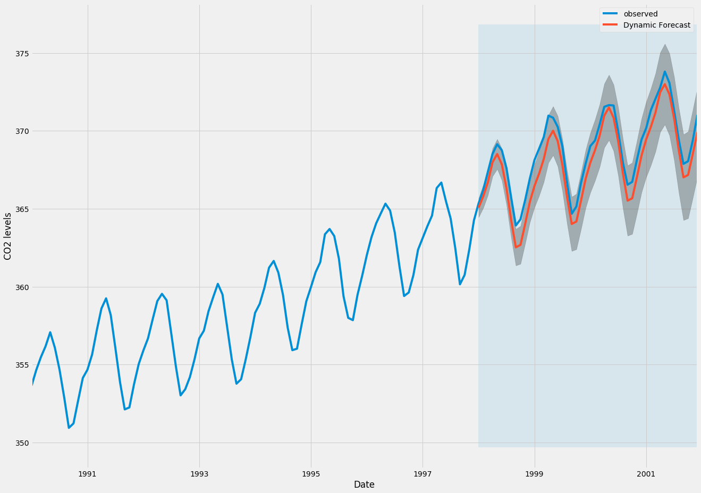
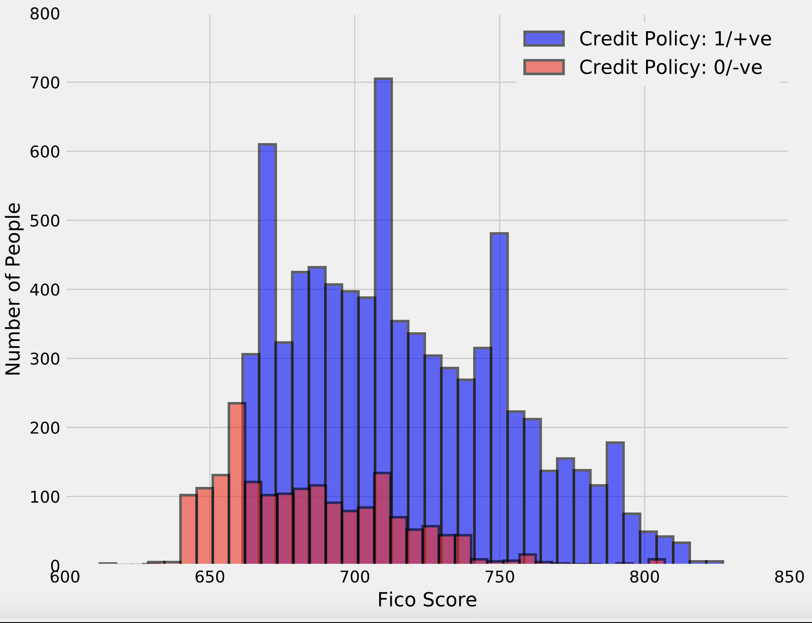
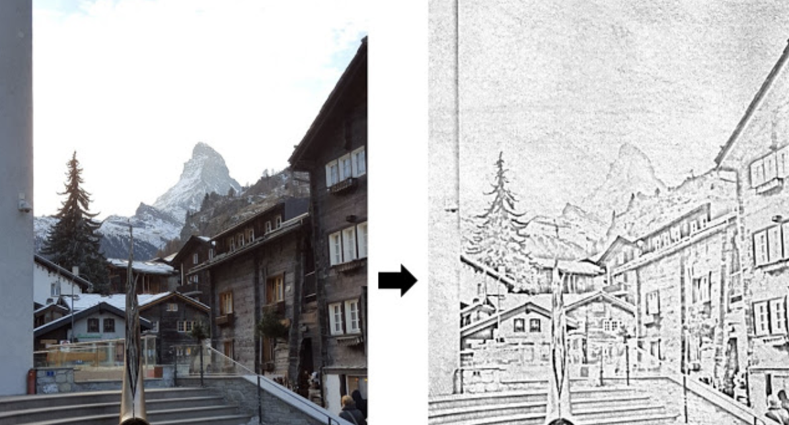
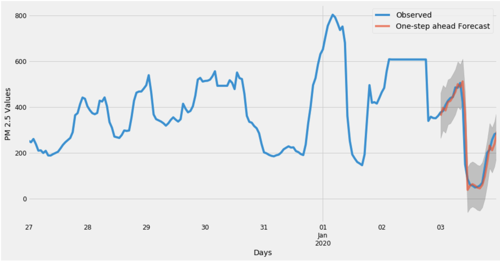
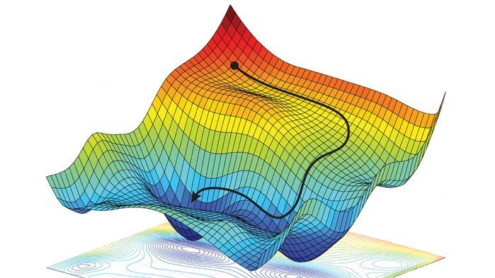
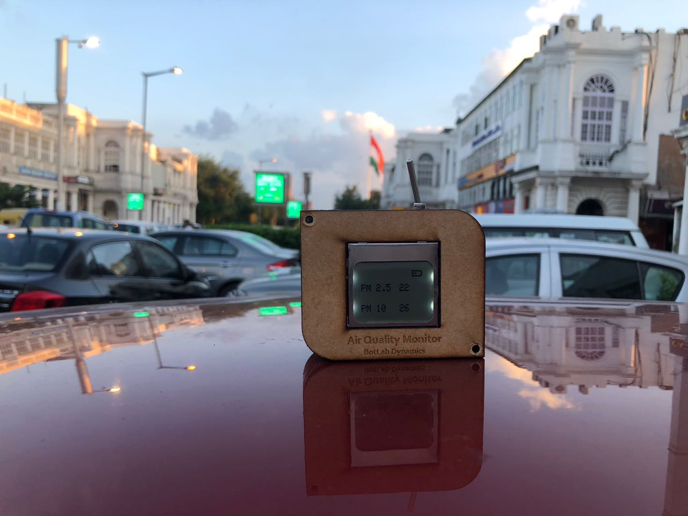

Facial Recognition or Facial Image Detection can be used to identify the individuals using their facial features.
Facial Recognition or Face Detector can be used to know whether a persons Identity through his/her face features.
This Repository can be used to carry out such a task. It uses your WebCamera and then identifies your expression in Real Time.
Technical Skills: OpenCV, Python, Scalar Vector Machine, K-Fold Cross Validation, SciPy, NumPy, Pandas, Matplotlib

Carried out Analytics on Loan Predition Dataset to predict whether the loan can be granted or not. This Repo utlises the Statistical Plots and other visualisations to understand the dataset better.
Technical Skills: Python, Seaborn ,NumPy, Pandas, Matplotlib
Watsinos (A ChatBot for taking Pizza Orders from the end-user), an App that would be used to customise the pizza contents according to the users intent. The backend is the IBM Cloud, the Conversation API, Text-to-Speech API, Speech-to-Text API has been used in the Watsinos. Intents, Dialogs and entities have been used. The app is developed on Android Studio.
Technical Skills: Android Studio, Java ,XML, IBM Cloud, Microservices
Finding Lanes using OpenCV, for simulation of self-driving cars.
Technical Skills: OpenCV, Python, Numpy, Canny Edge Detection

Flask Web App for creating Pencil sketch.
Technical Skills: Python, Flask, OpenCV, Requests

Time Series Forecasting and regression analysis web app to predict and forecast PM 2.5 values and other Air pollution metrics
Technical Skills: Python, Numpy, Pandas, Matplotlib, Seaborn, Exponential Moving Averages,

A Machine learns through a model, and a model is basically a function f such that f(x) maps to y. The model learns through taking features classes or we can say, input variables which are also known as X. These are usually independent variables. These are used to predict the target variables that are Y (known as the response or more traditionally the dependent variables).
IoT enabled Blockchain to enable secure tracking of certifications and other important information in supply chains in a secured and shared Hyper-ledger which is transparent, tamper-proof, and distributed across multiple computers that are running by consensus i.e., with trust and reliability.The Supply chain can be tracked by using these above-mentioned tags in two ways. It can store data directly, and will also be able to update as the items move through the Supply Chain exchanging hands.

worked on MQTT protocols for migrating telemetry feed from low bandwidth IoT-Devices to Google IoT Core for further data collection and accumulation.
Developed Google Cloud Functions using Python as a programming language to migrate and also create a workflow to receive and send the telemetry feed from Google Cloud Pub/Sub to store data into Google Cloud SQL and Google Firestore.
Developed and working on Time Series Analysis for predicting and forecasting PM2.5 values.
Tested Seasonal Auto-Regressive Integrated Moving Average, Auto-Regressive Integrated Moving Average, Simple Moving Average, Exponential Moving Average, Weighted Moving Average, and many other models & algorithms and regression analysis for time series analysis.
Developed Python scripts for publishing and subscribing data and payload messages for testing and understanding the working of Google Pub/Sub and Google IoT core.
Technical Skills: Python, Flask, MQTT, GCP, Statistical Analysis, Tableau
Developed a Project using Python in Web Scraping by utilizing Pandas, ScraPy, SciPy, NumPy and Python-based Automation and extracted unstructured Data from Web Pages and prepared a structured Dataset for doing Data processing. Extracted Data to assess the accuracy and consistency of the Arrival Time of Trains. Designed a script based solution in Python which automated the processes of Data extraction in real-time and simultaneously stored the Data in CSV formats.
Implemented Crawlers using ScraPy and extracted raw Data using CSS and XPath selectors.
Utilized the Regular expressions and Date and Time Packages and converted the unstructured Time and Date formats fetched from the webpage into Excel readable formats for Graphical analysis.
Removed various anomalies in the Data by using Python libraries like Pandas, NumPy and manipulated the Data Frames for converting them into an optimized format.
Technical Skills: Python, WebScraping, Excel for Analytics, Numpy, ETL, Data Extraction, Data Handling